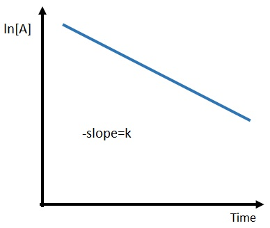

1) Which step is always the rate-determining step in a multi-step reaction?
A) The slowest step*
B) The last step
C) The fastest step
D) The first step
The slowest step is always the rate determining step.
2) Which of the following expressions accurately depicts the rate of this reaction?
2 NO(g) + O2 (g) ➞ 2 NO2 (g)
A) \( -\frac{Δ[O_2]}{Δt} \)*
B) \( +\frac{1}{2}\frac{Δ[NO]}{Δt} \)
C) \( +\frac{1}{2}\frac{Δ[O_2]}{Δt} \)
D) \( +\frac{Δ[NO_2]}{Δt} \)
You should be looking for an answer that shows a negative sign for reactants or positive for products. Also, the coefficient from the balanced chemical equation should be in the denominator. Rate =\( -\frac{1}{2}\frac{Δ[NO]}{Δt} \) = \( -\frac{Δ[O_2]}{Δt} \) = \( +\frac{1}{2}\frac{Δ[NO_2]}{Δt} \)
3) What generally happens with a reaction when the temperature is increased?
A) The rate constant (K) decreases, causing the rate of the reaction to decrease.
B) The rate constant (K) increases, causing the rate of the reaction to decrease
C) The rate constant (K) increases, causing the rate of the reaction to increase*
D) The rate constant (K) decreases, causing the rate of the reaction to increase
If you think about a generic rate equation such as Rate = k[A][B], anything that affects the rate, that isn't a change in concentration of A or B must cause a change in k. Since an increase in temperature increases the rate of a reaction, it must be because it increases the value of k.
The effect of temperature on the equilibrium constant is shown in the Arrhenius equation. k = \( Ae^{\frac{-E_a}{RT}} \)
4) Using the balanced chemical equation below, calculate the rate of rate reaction with a rate in change of concentration of Cl2 equal to -10.4 M/s.
2 NH3 (g) + 3 Cl2 (g) → N2 (g) + 6 HCl (g)
A) 31.2 M/s
B) 10.4 M/s
C) 1120 M/s
D) 3.47 M/s*
Rate = \( -\frac{1}{2}\frac{Δ[NH_3]}{Δt} \) = \( -\frac{1}{3}\frac{Δ[Cl_2]}{Δt} \) = \( +\frac{Δ[N_2]}{Δt} \) = \( +\frac{1}{6}\frac{Δ[HCl]}{Δt} \) Substitute in -10.4 M/s for change of concentration of Cl2 Rate = -1/3 10.4 M/s Rate = 3.47 M/s
5) What are biological catalysts called?
A) Exfoliators
B) Inhibitors
C) Enzymes*
D) Substrates
Biological catalysts are called enzymes. Substrates bind to catalysts. Inhibitors slow the action of an enzyme.
6) The reaction A + B ➞ C + D, has a rate constant of 2.86 × 10-5 M-1s-1 at 0°C, what is the overall order of the reaction?
A) 3
B) 2*
C) 1
D) 0
If you add the exponents of the rate constant units (M-1s-1), you get -2, so the order of the overall reaction is 2.
7) What is the overall order of the following reaction? 2 NO2 (g) + F2 (g) ➞ 2 NO2F (g); Rate = k[NO2][F2]
A) third
B) first
C) second*
D) zeroth
based on the rate law (Rate = k[NO2][F2]), the order of the reaction is second, because if you add the exponents (orders) of each reactant, then you will get 2
8) Given the initial rate data below, what is the rate law for the following reaction? A (g) + B (g) ➞ C (g)
Trial
[A]
[B]
rate (M/s)
1
1.0
1.0
5.11x10-8
2
1.0
2.0
2.04x10-7
3
2.0
1.0
5.11x10-8
A) rate =K[A]2
B) rate =K[B]4
C) rate =K[B]2*
D) rate =K[A][B]
From trial 1 to 3 only the concentration of A changed.
Trial
[A]
Rate
3
[2.0]
5.11x10-8
1
[1.0]
5.11x10-8
Dividing the rate law of trial 3 by the rate law of trial 1, then canceling out the rate constant and concentration of B leaves the following. \( \frac{[2.0]^x}{[1.0]^x} \) = 5.11x10-8/5.11x10-8 \( (\frac{[2.0]}{[1.0]} )^x \)= 1 x = 0
Trial
[B]
Rate
2
[2.0]
2.04x10-7
1
[1.0]
5.11x10-8
Dividing the rate law of trial 2 by the rate law of trial 1, then canceling out the rate constant and concentration of A leaves the following. \( \frac{[2.0]^y}{[1.0]^y} \) = 5.11x10-8/5.11x10-8 \( (\frac{[2.0]}{[1.0]} )^y \)= 1 y = 0
Thus the rate law will be: Rate = K[A]0[B]0 = K[B]2
9) The following reaction is a second order reaction. If the rate constant is 0.767 M-1s-1, and the original concentration of O3 is 1.85x10-2 M, then what is the half-life?
2 O3 (g) ➞ 2 O2 (g)
A) 70.5 s*
B) 0.904 s
C) 0.0121 s
D) 41.5 s
Since this is a second order reaction, the half-life equation is \( \frac{1}{K[A]_0} = t_{1/2} \) Substituting in 0.767 M-1s-1 for K, and 1.85x10-2 M for [A]0 gives: t1/2 = 1/(0.767 M-1s-1 x 1.85x10-2 M) = 70.5 s
10) What is are the units for the k in the following rate law. Rate = k[A]
A) 1/(Ms) or M-1s-1
B) 1/(M2S) or M-2S-1
C) 1/(M3s) or M-3s-1
D) 1/s or s-1*
Based on the rate law (Rate = k[A]), the overall order of the reaction is first, so the exponents for units of the rate constant will add to -1. Since seconds is always to the -1 power, molarity will have to be to the 0 power. Thus 1/s or s-1 is the answer.
11) Given the following proposed mechanism, what is the rate law for the reaction? A2 + B ➞ A2B (overall reaction)
step 1
A2➞ 2A
fast
step 2
2A + B ➞ A2B
slow
A) Rate = \( \frac{K[A_2]^2[B]}{2} \)
B) Rate = \( K[A_2]^2[B] \)
C) Rate = \( K[A_2][B] \)*
D) Rate = \( K[A_2]^{1/2}[B] \)
The rate law for the rate determining (slow) step (2A + B ➞ A2B) is: rate = k2[A]2[B], however, we can't have an intermediate ([A]) in our final rate law.
Assume the first-fast reaction (A2➞ 2A) reaches equilibrium. rateF = rateR kF[A2] = kR[A]2 Typically you would solve for the concentration of the intermediate ([A]), but in this case we can solve for [A]2 \( \frac{k_F}{k_R} \)[A2] = [A]2
Substitute in\( \frac{k_F}{k_R} \)[A2] for [A]2 in rate = k2[A]2[B] to get: rate = k2\( \frac{k_F}{k_R} \)[A2][B], then combine the constants to get: rate = K[A2][B]
12) What is the order of the reaction represented by the graph below?
A) third
B) first
C) zeroth
D) second*
Zero order
First order
Second order

13) A reaction is found to have an activation energy of 45.3 kJ/mol, and a frequency factor (A) of 8.24x1010 s-1. What is the rate constant of the reaction at 294 K?
A) 8.09x1010 s-1
B) 590. s-1
C) 9.21x1018 s-1
D) 737 s-1*
K = \( Ae^{\frac{-E_a}{RT}} \) Substituting in for 8.24x1010 s-1 A, 45.3 kJ/mol for Ea, 0.0083145 kJ/mol-K for R, and 294 K for T gives: K = 8.24x1010 s-1 x e(-45.3 kJ/mol)/(0.0083145 kJ/mol-K x 294 K) K = 737 s-1 *Ea and K need to both be in J or kJ
14) Identify the statement that is true.
A) Catalysts increase the activation energy thus increasing the rate of a reaction
B) The rate constant decreases when temperature is increased
C) Rate constants are temperature dependent*
D) Catalysts increase the concentration of reactants thus increase the rate of a reaction
If you look at a generic rate law (rate = k[A][B]), anything that affects the rate, besides changes in concentration are accounted for in the rate constant. Since increasing temperature increases the rate of a reaction, it will do so by increasing the rate constant. The same is true for adding a catalyst. The affect temperature has on the rate constant is shown in the Arrhenius equation. So is the effect of a catalyst, because it lowers the activation energy (Ea). K = \( Ae^{\frac{-E_a}{RT}} \)
15) The decomposition of cyclopropane to propene is a first-order reaction that has a rate constant of 6.24x10-4 s-1. If the initial concentration of cyclopropane is 6.60 M, what is the concentration of cyclopropane after 311 s?
A) 1.28 M
B) 5.44 M*
C) -23.5 M
D) 6.41 M
The integrate rate law for a first order reaction is \( ln\frac{[A]_t}{[A]_0} = -kt \) Taking the inverse log of both sides gives: \( \frac{[A]_t}{[A]_0} = e^{-kt} \), multiplying both sides by [A]0 gives: \( [A]_t = [A]_0 x e^{-kt} \) Plugging in 6.60 M for [A]0, 6.24x10-4 s-1 for K, and 311 s for t gives: [A]t = 6.60 M x e(-6.24x10-4 s-1 x 311 s) [A]t = 5.44 M
16) Which of these two pathways represents the catalyzed pathway?
A) A
B) B*
C) All of the above.
D) None of the above.
The catalyzed pathway will have a lower activation energy (Ea).
17) (SLO 2.6) At 356 K a reaction is found to have a rate constant of 23400 M-1s-1, at 211 K the reaction is found to have a rate constant of 1.91 M-1s-1. What is the activation energy for this reaction.
A) 17.6 kJ/mol
B) -17.6 kJ/mol
C) 40.5 kJ/mol*
D) -40.5 kJ/mol
Starting with the Arrhenius equation:
\( ln \frac{k_2}{k_1} = -\frac{E_a}{R}(\frac{1}{T_2} - \frac{1}{T_1}) \), multiplying each side by -R \( -R x ln \frac{k_2}{k_1} = E_a x (\frac{1}{T_2} - \frac{1}{T_1}) \), dividing each side by \( (\frac{1}{T_2} - \frac{1}{T_1}) \) \( \frac{-R x ln \frac{k_2}{k_1}}{(\frac{1}{T_2} - \frac{1}{T_1}) } = E_a \), then plugging in 23400 M-1s-1 in for K1, 1.91 M-1s-1 in for K2, 0.0083145 kJ/mol-K for R, 356 K for T1, and 211 K for T2 gives: Ea = (-0.0083145 kJ/mol-K x ln( 1.91 M-1s-1 / 23400 M-1s-1)) / (1/211 K - 1/356 K) Ea = 40.5 kJ/mol
18) (SLO 2.4) What rate is termolecular?
A) Rate = K[B]2
B) Rate = K[A]3*
C) Rate = K
D) Rate = K[A]
Adding the exponents (orders) of the concentrations for K[A]3 gives 3 so the reaction would be termolecular
19) (SLO 2.7) Which of the following reactions would you predict to have the largest orientation factor?
A) H (g) + F (g) ➞ HF (g)*
B) NH3 (g) + BCl3 (g) ➞ H3N-BCl3 (g)
C) Br2 (g) + H2C-CH2 (g) ➞ H2BrC-CBrH2 (g)
D) NOCl (g) + NOCl (g) ➞ 2 NO (g) + Cl2 (g)
The reaction with the largest orientation factor will be the reaction with atomic (not molecular) reactants. Because atoms are essentially spheres, and there is not really a "bad orientation" for spheres. So the orientation factor would be close to 1 (meaning ~100% collide with a proper orientation).
20) (SLO 2.5) For a reaction that follows the general rate law, Rate = K[A][B]2, what will happen to the rate of reaction if the concentration of A is increased by a factor of 6?
A) The rate will increase by a factor of 6.0*
B) The rate will increase by a factor of 12
C) The rate will decrease by a factor of 1/12
D) The rate will decrease by a factor of 1/6.0
To solve this question, take the exponent (order) for A, and raise the factor (6) by that exponent. 61 = 6.0
21) (SLO 2.2) Given the following balanced equation, determine the rate of reaction with respect to [H2]. N2 (g) + 3 H2 (g) ➞ 2 NH3 (g)
22) (SLO 2.3) What is the overall order of the following reaction, given the rate law? X + 4 Y ➞ 4 Z Rate = k[X][Y]
A) 2*
B) 1
C) 5
D) 4
Ignore the chemical equation, and just add the exponents (orders) of the reactants. Rate = k[X][Y] 1 + 1 = 2
23) (SLO 2.1) If the rate of appearance of H2 in the gas phase reaction is 0.0586 M/s, then the rate of disappearance of HBr is _______ M/s
2 HBr (g) ➞ H2 (g) + Br2 (g)
A) 0.0586 M/s
B) 0.0293 M/s
C) 0.117 M/s*
D) 17.1 M/s
Rate = \( -\frac{1}{2}\frac{Δ[HBr]}{Δt} \) = \( \frac{Δ[H_2]}{Δt} \) = \( \frac{Δ[Br_2]}{Δt} \) If we substitute in 0.0586 M/s for the change in concentration of H2, and solve for the rate of disappearance of HBr, then we'll get 0.117 M/s.
24) If Q (the reactant quotient) is greater than the equilibrium constant, then which way will the reaction proceed more quickly?
A) In the reverse direction*
B) In the forward direction
C) All of the above.
D) None of the above.
If Q (the reactant quotient) is greater than the equilibrium constant, then it means we have too much product (numerator) and too little reactant (denominator) to be at equilibrium. Since reversible reactions will always proceed to equilibrium, the reaction will have to proceed in the reverse direction to produce more reactant, and use up some of the product.
25) Is the following reaction reactant or product favored? AgCl (s) ⇌ Ag+ (aq) + Cl- (aq) Kc = 1.8x10-10
A) Product favored
B) Reactant favored*
C) All of the above.
D) None of the above.
When Kc is greater than 1, it is product favored, when Kc is less than 1 it is reactant favored. This is because Kc is essentially products over reactants. So a number greater than 1 indicates more products than reactants, whereas a number lower than 1 indicates more reactants than products.
26) At equilibrium, which of the following are true?
A) The reaction stops
B) The concentration of the reactants and products are equal
C) The concentration of the reactants and products are stable*
D) The rate constant of the forward reaction is equal to the equilibrium constant
The rate of the forward reaction is equal to the rate of the reverse reaction, which means that the concentration of the reactants and products will remain stable.
27) Once this reaction has reached equilibrium, which of the following changes would shift the equilibrium to the right? 2 SO2 (g) + O2 (g) ⇌ 2 SO3 (g), ΔH = -197.7 kJ
A) A decrease in volume*
B) A decrease in pressure
C) Adding a catalyst
D) An increase in temperature
Since there are more moles of gas on the left side of the equation, a decrease in volume (increase in pressure) will shift the equilibrium to the right. Since the reaction is exothermic, a decrease in temperature will shift the reaction to the right.
28) In the reaction below, at equilibrium, the concentration of H2 is 0.362 M, and the concentration of O2 is 0.422 M. Determine the equilibrium concentration of H2O (g). 2 H2 (g) + O2 (g) ⇌ 2 H2O (g) Kc = 2.64x10-1
A) 0.0146 M
B) 0.201 M
C) 0.0403 M
D) 0.121 M*
Kc = \( \frac{[H_2O]^2}{[H_2]^2[O_2]} \) = ([H2O]2)/(0.3622 x 0.422) = 2.64x10-1 [H2O]2 = (0.3622 x 0.422) x 2.64x10-1 [H2O]2 = 0.0146 M2 [H2O] 0.121 M
29) Once this reaction has reached equilibrium, which of the following changes would shift the equilibrium to the left? 2 SO2 (g) + O2 (g) ⇌ 2 SO3 (g), ΔH = -197.7 kJ
A) A decrease in temperature
B) Adding SO3*
C) Removing SO3
D) An increase in pressure
Removing reactants or adding products will shift a reaction to the left.
30) The reaction below has a Kp value of 5.40x10-7. What is the value of Kc for this reaction at 610 K? 2 A (g) + 3 B (g) ⇌ A2B3 (g)
A) 8.60x10-14
B) 2.45x10-11
C) 8.60x10-14
D) 3.39*
Kp = Kc(RT)Δn, solving for Kc: Kc = Kp/(RT)Δn = 5.40x10-7/(0.08206 L-atm/mol-K x 610 K)-4 Kc = [5.40*10^-7/((0.08206*610)^(1-2-3))]
31) For the following reaction, if a reaction container holds 2.67 M I2 and 2.53 M Br2. After a reaction takes place, what would be the equilibrium concentration of IBr? I2 (g) + Br2 (g) ⇌ 2 IBr (g) Kc = 4.10
x = 1.31 M, or 212 M 212 M can be rejected because it will give a negative equilibrium concentration for I2 and Br2. Thus [IBr] = 2 x 1.31 M [IBr] = 2.61 M
32) Is the following reaction reactant or product favored? HBr (s) + H2O (l) ⇌ H3O+ (aq) + Br- (aq) Kc = 1.0x109
A) Product favored*
B) Reactant favored
C) All of the above.
D) None of the above.
When Kc is greater than 1, it is product favored, when Kc is less than 1 it is reactant favored. This is because Kc is essentially products over reactants. So a number greater than 1 indicates more products than reactants, whereas a number lower than 1 indicates more reactants than products.
33) What is Δn for the following equation in relating Kc to Kp? 4 NH3 (g) + 3 O2 (g) ⇌ 2 N2 (g) + 6 H2O (g)
A) -2
B) 3
C) 0
D) 1*
A change is always final minus initial, so take the moles of gas in the product 2 N2 (g) + 6 H2O (g), and subtract the moles of gas on the reactant side 4 NH3 (g) + 3 O2 (g). 8 - 7 = 1
34) (SLO 3.6) In a reaction mixture containing only products, what is the value of Qc?
A) \( \sqrt(2) \)
B) ꝏ (infinity)*
C) 0
D) 2
"Only products" would mean that the denominator in the Qc equation is zero. Thus the answer is ꝏ (infinity).
35) (SLO 3.1) What is the equilibrium constant equation for the following reaction? 2 O3 (g) ⇌ 3 O2 (g)
A) K = \( \frac{[O_3]^3}{[O_3]^3} \)
B) K = \( \frac{[O_3]^2}{[O_2]^3} \)
C) K = \( \frac{[O_2]^2}{[O_2]^2} \)
D) K = \( \frac{[O_2]^3}{[O_3]^2} \)*
The equilibrium constant expression is concentration of products (raised to their coefficients) over concentration of reactants (raised to their coefficients). K = \( \frac{[O_2]^3}{[O_3]^2} \)
36) (SLO 3.2) The equilibrium constant is given for one of the reactions below. Determine the value of the missing equilibrium constant (Kc2). N2O4 (g) ⇌ 2 NO2 Kc1 = 1.34 3 N2O4 (g) ⇌ 6 NO2 Kc2 = ?
A) 4.36
B) 4.02
C) 5.79
D) 2.41*
Because the coefficients in the second equation are 3 times the coefficients in the first equation, Kc2 will be Kc1 raised to the 3 power.
37) (SLO 3.3) The Kp for the reaction below is 9.21 x 10-2 at 140°C. 2 NO (g) + Cl2 (g) ⇌ 2 NOCl (g)
In an equilibrium mixture of the three gases, PNO = PCl₂ = 9.09 x 10-5 atm. The partial pressure of the product, nitrosyl chloride (NOCl2), is __________ atm.
A) 0.0000263 atm
B) 2.63x10-7 atm*
C) 0.0000276 atm
D) 6.92x10-14 atm
Notice that these are already equilibrium values.
2 NO (g)
+ Cl2 (g)
⇌ 2 NOCl (g)
E
9.09 x 10-5
9.09 x 10-5
x
K = \( \frac{P_{NOCl_2}^2}{P_{NO}^2 x P_{Cl_2}} \)= x2/(9.09 x 10-5)3 = 9.21 x 10-2 x2 = (9.21*10-2) x (9.09 x 10-5)3 x2 = 6.92x10-14 x = 2.63x10-7 [COCl2]eq = 2.63x10-7 atm
38) (SLO 3.7) Consider the following reaction. Xe (g) + 2 F2 (g) ⇌ XeF4 (g)
A reaction mixture contains 5.17 atm of Xe, 7.18 atm F2. Once the reaction reaches equilibrium, the pressure of Xe is 4.45 atm. What is the equilibrium constant (Kp) for the reaction?
A) 0.00388
B) 0.00491*
C) 0.0181
D) 0.0282
R
Xe (g)
+ 2 F2 (g)
⇌ XeF4 (g)
I
5.17
7.18
0
C
-x
-2x
+x
E
4.45
7.18-2x
x
5.17 - x = 4.45 5.17 - 4.45 = x 2 x 0.720 = 2x 1.44 = 2x PXeF4 = 0.720 PF2 = 7.18 - 2x = 5.74 Kp = (0.720)/(4.45 x 5.742) Kp = 0.00491
39) (SLO 3.4) The following reaction is endothermic. Which change will shift the equilibrium to the left? N2O4 ⇌ 2 NO2
A) Adding a catalyst
B) Lowering the temperature*
C) Raising the temperature
D) All of the above.
E) None of the above.
In an endothermic reaction, you can treat heat as if it is a reactant, thus lowering the temperature will shift the equilibrium to the left. Adding a catalyst does not affect equilibrium.
40) (SLO 3.5) Identify the change that will always shift the equilibrium to the right.
A) Decreasing temperature
B) Increasing volume
C) Adding product
D) Adding reactant*
Adding reactant will always shift the equilibrium to the right Removing reactant will always shift the equilibrium to the left Adding product will always shift the equilibrium to the left Removing product will always shift the equilibrium to the right Increasing pressure or decreasing volume will always shift the equilibrium to the side with lower moles of gas Decreasing pressure ore increasing volume will always shift the equilibrium to the side with higher moles of gas Increasing temperature will shift the equilibrium to the right in an endothermic reaction, but to the left in an exothermic reaction Decreasing temperature will shift the equilibrium to the left in an endothermic reaction, but to the right in an endothermic reaction